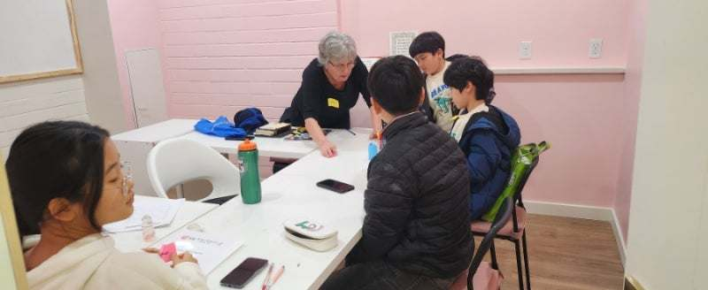

밴쿠버 전과목 보습학원 오픈
밴쿠버 전과목 보습학원 오픈
안녕하세요. 저희 부부는 한국에서 정철어학원 및 입시학원을 십수 년간 운영 및 강사로 일해오다가 캐나다 이민을 온 지 3년이 되었습니다. 이민 와서 영주권 취득을 위해 정신없이 살다 보니 막상 우리 자녀들이 관리가 안 되고 소외되고 있었습니다.
캐나다 학교는 3시면 하교를 하니 맞벌이하는 부부들은 라이드가 쉽지 않고, 일하고 돌아온 부모들은 영어 스트레스와 육체노동으로 지쳐서 자녀들과 함께 좋은 시간을 보내주지 못하는 일이 생기더라고요. 그런 상황에서 아이들은 컴퓨터게임과 휴대폰 중독이 되어가며 못하게 꾸중하는 부모와의 관계가 점점 안 좋아지는 결과가 집집마다 빈번히 생기는 것을 알게 되었고, 우리 자녀들을 방과 후에 안전하게 보호하며 철저한 학습관리와 개방적인 나라 캐나다의 이민생활에서 무엇보다 가장 우선시되는 신앙교육의 필요성을 깨닫게 되었습니다.
우리가 캐나다 이민을 선택한 궁극적인 이유가 바로 우리 자녀들의 창의력을 겸한 높은 수준의 교육과 가족과의 여유로운 대화가 오가는 오붓한 시간 보내기였는데 영주권을 따기 위해 생업과 학업을 겸하면서 몇 년간은 대가 지불을 우리 자녀들이 고스란히 감당하고 있는 현실을 접하며 고민하고 계신 이민자 가정들이 많이 있다는 것을 알게 되었습니다.
이런 문제를 해결하는 데 도움이 되고자 방과 후 학교 프로그램인 한국의 보습학원의 개념으로 보육과 교육 서비스를 제공하는 학원을 오픈하게 되었습니다. 밴쿠버의 주거비, 생활비와 사교육비가 어마어마하게 비싸서 한국에서처럼 학원을 자유롭게 보낼 수도 없는 현실이 부모의 마음을 더 답답하게 만들기에 저희 또한 똑같은 부모 된 심정으로 저렴한 교육비를 책정할 수밖에 없었습니다. 궁금한 점 있으시면 부담 갖지 마시고 문의하세요♡
■정철 방과 후 스쿨 러닝센터가 진행할 서비스는?
1. 하교 시간 라이드제공
2. 하교 후 간식 제공
3. 정철 NIV 바이블 영어수업(읽기, 쓰기, 말하기, 듣기, 문법)
4.원어민 교사와 하브루타식 토론수업
5. 한국수학, 캐나다 수학
6. 메타인지학습 프로그램(두뇌개발 훈련, 교과서 통암기, 속독 속해, 직독 직해)
7. 자기주도학습
8. 악기(통기타, 베이스 기타,드럼)
9.한글깨치기
10.학교 내신 성적 관리(고학년1:1,1:4 집중과외)
●교육비안내●
•주1회(4주기준)×매일3시간씩=12시간 350불(시간당29불)
•주2회(4주기준)×매일3시간씩=24시간 550불(시간당22불)
•주3회(4주기준)×매일3시간씩=36시간 700불(시간당19불)
•주5회(4주기준)×매일3시간씩=60시간 850불(시간당14불)
※매월4주기준 교육비 책정이지만 5주차가 있는 주는 봄,여름,겨울방학을 위해서 추가비용없이 수업을 진행합니다.
☆하원은 부모님의 퇴근시간에 직접 픽업하시면 됩니다.
☆상담 예약
778-258-2223,
☆카톡ID: jafterschool
jcbibleschool@gmail.com
문자메시지 및 이메일 문의 부탁드립니다.
☆JC After school learning centre.
130 1140 Austin Ave. Coquitlam

